OFFICIAL USER GUIDE · BLENDER ADD-ON
Next Edition
Smart materials, layered imperfections, paint masks, decals and trim sheets. Everything you need to turn a clean model into a used one, inside Blender.
CONTENTS
SECTION 01
MatricX PRO turns a clean model into a used one. You pick a material, stack a few restrained imperfections on it — edge wear, dirt, scratches, rust — and the surface gains a history. No texture painting, no UV work, no shader network to build.
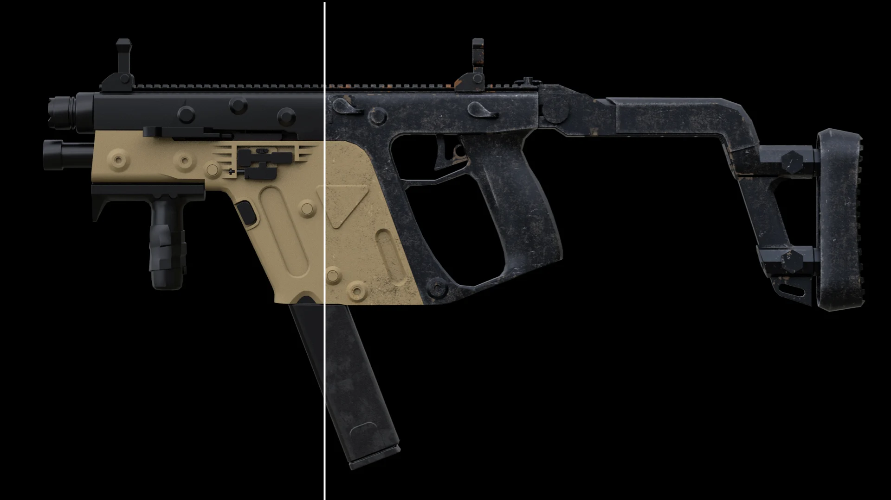
The core idea: several restrained layers read as more realistic than one strong layer. A surface that has been touched, wiped, knocked and left outdoors has many faint stories on it, not one loud one.
Throughout the guide, NEW marks something added in 2.1 and CHANGED marks something that works differently from 2.0.
SECTION 02
2.1 is about choice and control: more ready-made materials, more places imperfections can go, and faster ways to work in the viewport.
70 materials across nine families. 38 of them are recipes — finished materials built in MatricX from a base material and a layer stack. Unlike the locked authored stacks of 2.0, every recipe layer can be edited, added or removed, and Reset Imperfections brings the shipped look back. See Section 10.
SECTION 03 · EXISTING USERS
Five minutes here saves you surprises later. Read this once before opening your 2.0 projects.
MatricX PRO 2.1 needs MatricX_Assets_2.1.0.zip. Older packs (2.0.x and earlier) are
recognised but never used — Locate Asset Pack tells you so if you select one. Extract the 2.1.0 pack
beside the old one.
Keep your 2.0 pack folder where it is. MatricX never changes or deletes it, and decals already placed in your 2.0 scenes still load their images from it. If that folder moves, those decals stay in the scene but their images go missing.
Remove the old add-on and restart Blender before installing 2.1. MatricX disables a detected older copy and migrates your saved asset-pack path, favourites, recent items and custom material catalog — but a restart is what guarantees no old Python modules stay in memory.
| Area | In 2.1 |
|---|---|
| Special Mat | Removed as a category. Its camo patterns live on in the new Military Camo family (Camo 1–8). The other Special Mat presets are no longer offered. |
| Metal & Plastic presets | The 2.0 presets were replaced by a new set of recipe materials. Some names return, built new. Default Metal and Default Plastic remain. |
| Authored stacks | No longer locked. Recipe layers are fully editable; Reset Imperfections restores the shipped stack. |
| Leaking | Renamed Dirt Stain and reworked. |
| Scratch Paint | New pattern. Layers from 2.0 switch to it automatically the next time their material is rebuilt (see below). |
| Decal library | 17 decals. The text and label decals (HD, 4K, numbers, warning labels and others) are no longer included. |
| Tinted Glass | New independently authored glass shader. Starts slightly clearer: Roughness 0.04, IOR 1.52, Coat 0.30. |
| Material thumbnails | Now ship inside the asset pack, not the add-on. The collection is empty until the pack is connected. |
| Bevel default | New Default Metal and Default Plastic materials start at Bevel 0.006 (was 0.020). Existing materials keep theirs. |
SECTION 04
| File | What it is |
|---|---|
MatricX_PRO_2.1.0_Addon.zip | The add-on, for Blender's classic Add-ons installer. |
MatricX_PRO_2.1.0_Blender_Extension.zip | The same add-on packaged as a Blender Extension. |
MatricX_Assets_2.1.0.zip | The asset pack: materials, thumbnails, textures and the decal library. |
Install one code package, not both. Never enable the legacy add-on and the extension at the same time.
MatricX_PRO_2.1.0_Addon.zip.MatricX_PRO_2.1.0_Blender_Extension.zip.Then press N in the 3D Viewport and open the MatricX PRO tab. Continue with the asset pack in Section 05 — MatricX cannot apply materials without it.
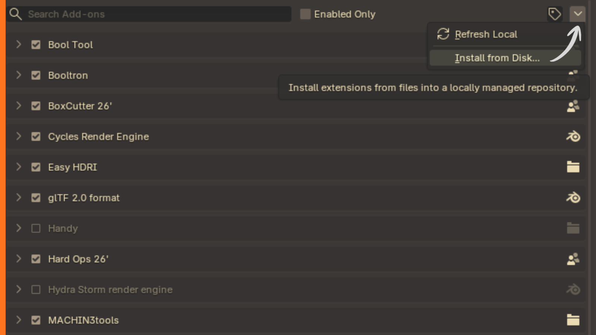
SECTION 05
The add-on is the tool; the asset pack is what it works with. Every material file, thumbnail, texture and decal lives in the pack.
Extract MatricX_Assets_2.1.0.zip to a normal folder on a fast local drive. Placing it
beside the installed add-on lets MatricX find it automatically. Anywhere else works too — you point
MatricX to it once with Locate Asset Pack.
If the panel shows Asset pack not connected, click Locate Asset Pack and select the
MatricX_Assets_2.1.0 folder. Any folder at or near the pack works: the pack itself, the folder
you extracted it into, the wrapper folder your archive manager created, or one of its subfolders.
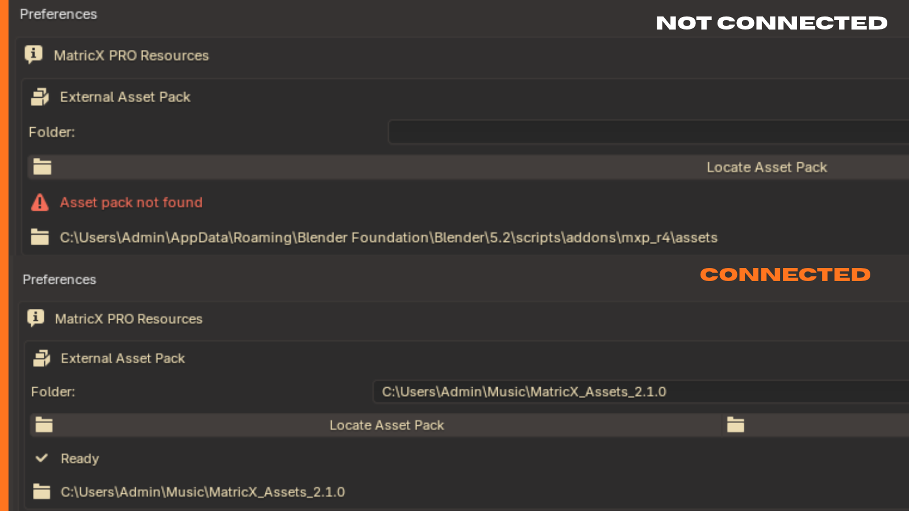
On Linux, extract the pack to a normal folder in your home directory, such as ~/Downloads
or ~/Documents, then use Locate Asset Pack and select the MatricX_Assets_2.1.0
folder.
Flatpak Blender: do not place the asset pack inside the .var sandbox folder. Extract
it to your home directory and use Locate Asset Pack. A Flatpak Blender keeps its add-ons under
~/.var/app/org.blender.Blender/, so "beside the add-on" does not apply there.
Windows limits full file paths to 260 characters. Extract the pack to a short location such as
C:\Users\<you>\Documents\ or D:\Assets\. If the folder that holds
MatricX_Assets_2.1.0 has a very long path, Blender cannot read the deepest decal files and
the decal browser stays empty.
Studio deployments: set the MATRICX_ASSET_ROOT environment variable to a shared
pack location and every workstation picks it up.
SECTION 06
Press N in the 3D Viewport and select the MatricX PRO tab. Three workspace buttons sit at the top of the panel.
Choose, tune and apply materials; save Looks; build imperfection stacks.
Decals mode places decal objects; Trims mode applies trim-sheet regions to faces.
Fast modelling colours, swatches and collection helpers for blockout.
Select an object carrying a MatricX material and the panel loads its settings, including the whole imperfection stack. Select a decal and you get that decal's controls. Controls that do not apply are hidden or greyed out.
If you browse to a different material than the one applied, the panel says Panel is browsing a different material — click Load Applied Material to jump back.
The ? button at the top of the Materials workspace shows the version and Check Update.
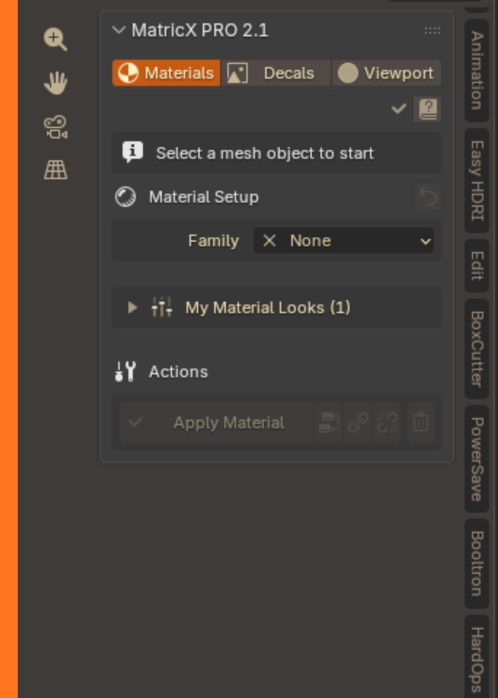
SECTION 07
Click the Family row to open a card popover with every family. One click switches the collection.
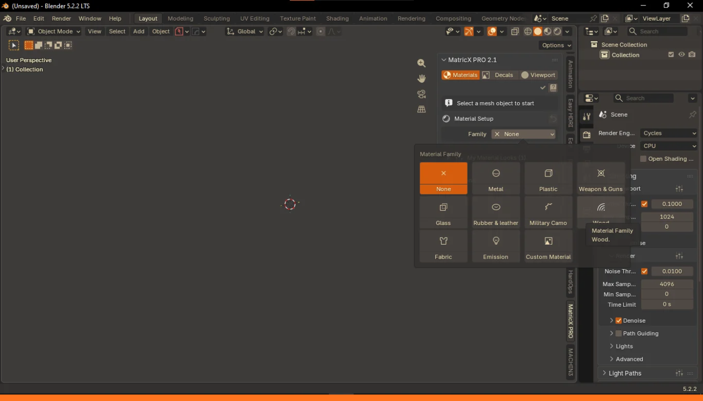
| Family | What is in it |
|---|---|
| Metal | Default Metal plus 14 recipe metals. |
| Plastic | Default Plastic plus 3 recipe plastics. |
| Weapon & Guns NEW | 19 recipe materials for weapons and gear. |
| Glass | Glass, Plastic Glass, Chromatic, Iridescent and Tinted Glass. |
| Rubber & Leather | Rubbers, leathers, a tyre rubber and 2 recipes. |
| Military Camo NEW | Camo 1–8. |
| Wood | Seven woods, from procedural to shiny lacquered. |
| Fabric | Three procedural weaves (need a UV map). |
| Emission | A glowing surface with a strength control. |
| Custom Material | Your own imported PBR texture sets (Section 16). |
The thumbnail browser shows the current family. Use it to explore; everything you need is on one row.
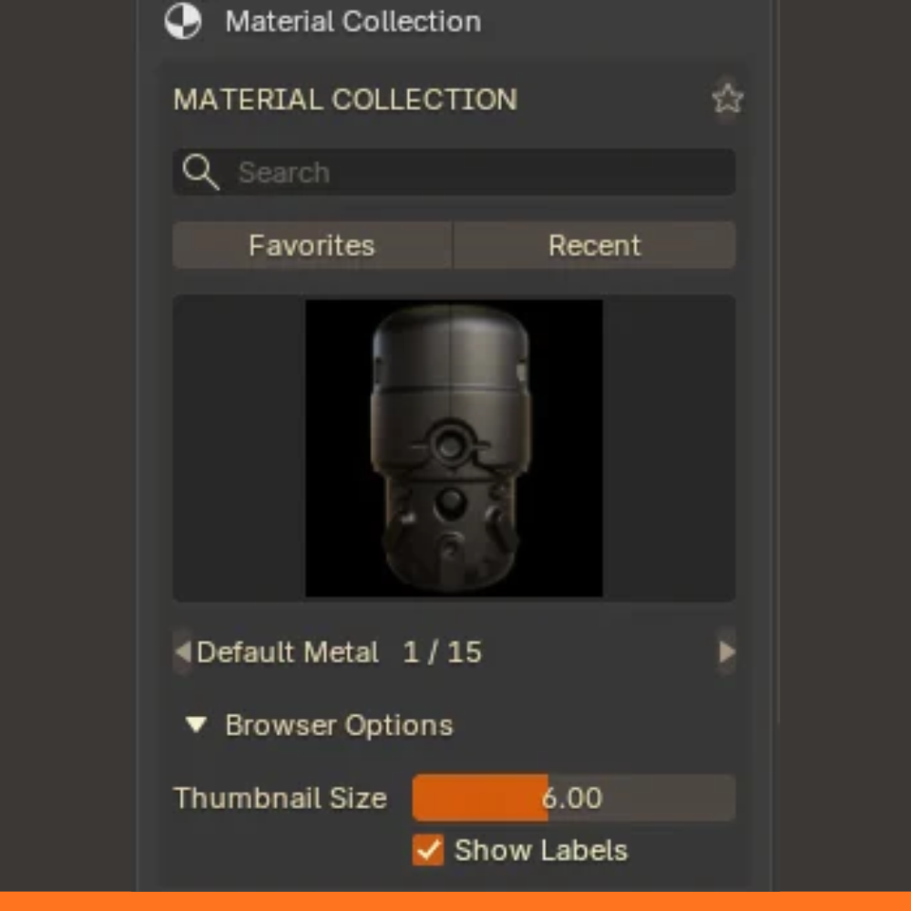
Browsing does not change your object. Clicking a thumbnail only loads it into the panel. Nothing is applied until you click Apply Material.
SECTION 08
70 materials ship in the 2.1.0 asset pack. Names below match what you see in the browser; every family shows its own thumbnails there once the asset pack is connected.
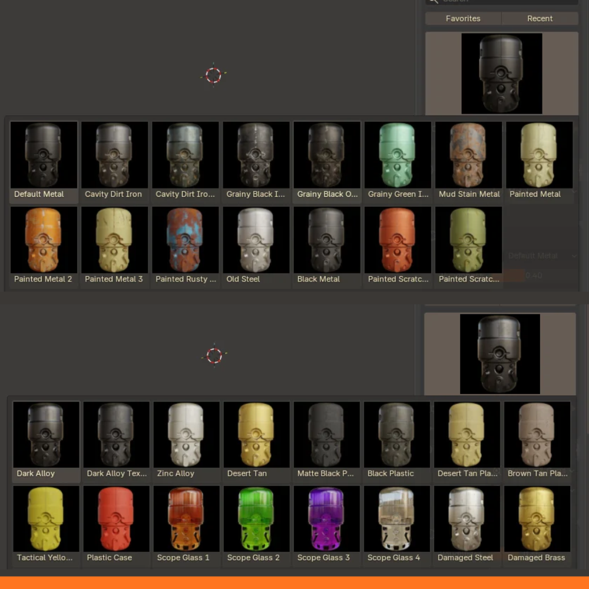
Default Metal · Cavity Dirt Iron · Cavity Dirt Iron 2 · Grainy Black Iron · Grainy Black Old Iron · Grainy Green Iron · Mud Stain Metal · Painted Metal · Painted Metal 2 · Painted Metal 3 · Painted Rusty Metal · Old Steel · Black Metal · Painted Scratch Metal · Painted Scratch Metal 2
Default Plastic · Old Black Plastic · Old Red Plastic · Dirty Plastic Blue
Dark Alloy · Dark Alloy Textured · Zinc Alloy · Desert Tan · Matte Black Polymer · Black Plastic · Desert Tan Plastic · Brown Tan Plastic · Tactical Yellow Polymer · Plastic Case · Scope Glass 1 · Scope Glass 2 · Scope Glass 3 · Scope Glass 4 · Damaged Steel · Damaged Brass · Damaged Wood · Damaged Wood 2 · Damaged Wood 3
Glass · Plastic Glass · Chromatic Glass · Iridescent Glass · Tinted Glass CHANGED
None (plain rubber) · Normal · Black · Dark Brown Leather · Brown · Rubber Tyre · Rubber Hose · Dirty Rubber
Camo 1 (green) · Camo 2 (triad) · Camo 3 (urban) · Camo 4 (olive-brown) · Camo 5 · Camo 6 (green digital) · Camo 7 (tan, olive and sage blocks) · Camo 8 (green with red patches)
Custom Wood · Red Wood · Light Wood · Deep Brown Wood · Shiny Brown Wood · Shiny Dark Brown Wood · Shiny Deep Brown Wood
Fabric 1 · Fabric 2 · Fabric 3 · Emission
SECTION 09
Material Setup holds the controls of the surface underneath the imperfections. What you see depends on the family.
| Family | Controls |
|---|---|
| Default Metal | Base Color, Roughness, Bevel. |
| Default Plastic | Base Color, Roughness, Gloss (Coat), Bevel. |
| Glass (plain) | Base Color, Roughness, Smudge, Texture Scale, Crack Amount, Crack Scale. |
| Grouped materials | Material Group Controls — the authored shader's own inputs, such as Base Color, Roughness, IOR, Clarity, Coat and Bevel Radius on Tinted Glass. |
| Military Camo | Camo Material Settings; Camo 5–8 add their own group settings (colours, scale, roughness, metallic). |
| Wood · Rubber & Leather | Base controls; Deep Brown Wood and Dark Brown Leather add group settings. |
| Fabric | Fabric Type. Needs a UV map — click Create UV Map if MatricX warns you. |
| Emission | Glow Strength. |
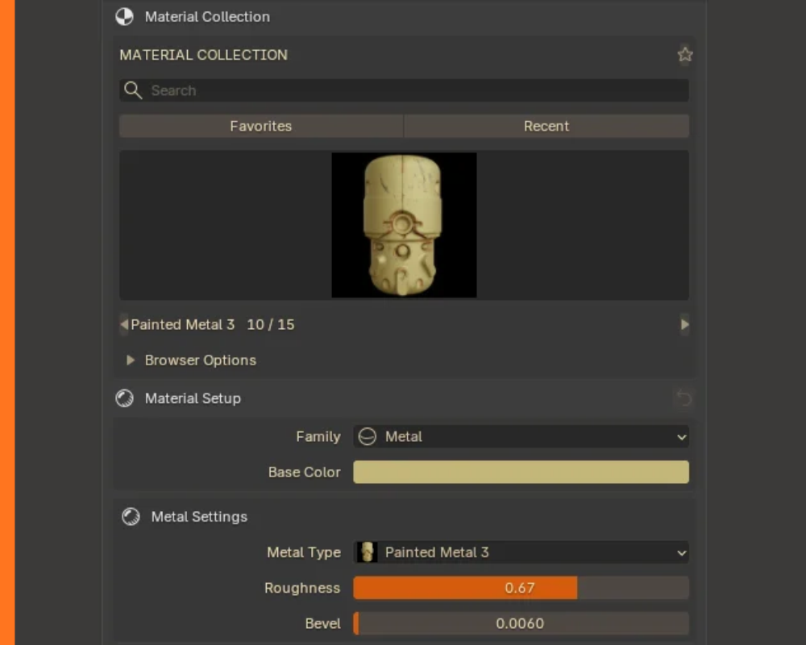
Selecting a material loads its own authored colour, roughness and settings into the panel. Values never bleed from one material to the next.
The ↺ button on the Material Setup header restores the material's shipped colour, roughness and surface values. It does not touch your imperfection layers.
Default Metal and Default Plastic expose a Bevel radius that rounds shading on hard edges — this is what makes edge wear catch light. New materials start at 0.006.
SECTION 10 · NEW IN 2.1
A recipe is a finished material made in MatricX itself: a base material with its own settings and a stack of imperfection layers. Apply one and it is done — but nothing is locked.
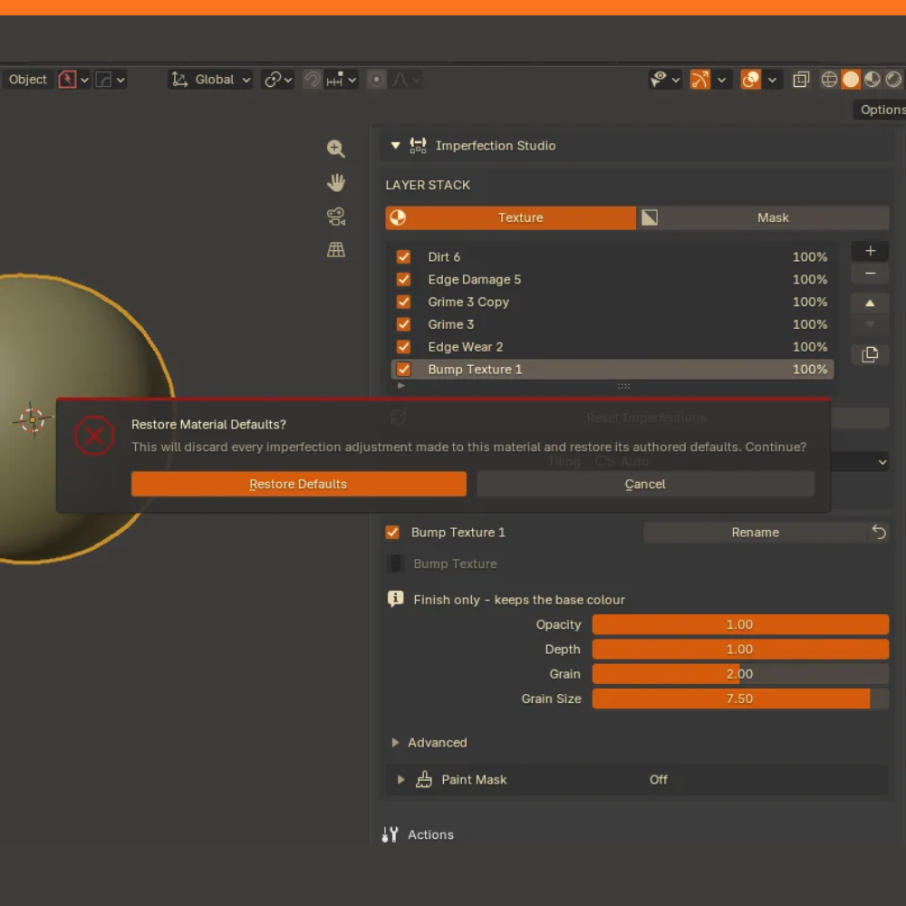
Start from a recipe, finish as your own: tune the recipe to your asset, then save the result as a Material Look (Section 12) so you can reuse it.
SECTION 11
The Actions box at the bottom of the Materials workspace.
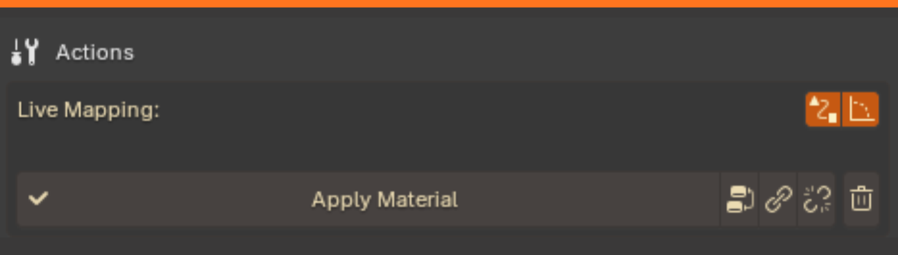
| Button | What it does |
|---|---|
| Apply Material | Assigns the material in the panel to the selected meshes. One click is one undo step. CHANGED |
| Arrange Material Nodes | Tidies the active material's shader nodes. |
| Link Material to Selected NEW | Gives every other selected mesh the active material. Edits are then shared. |
| Make Material Unique | Gives the active object its own copy, so edits stop affecting the others. Objects sharing its mesh use the copy too. |
| Remove Material CHANGED | Unassigns the MatricX material from the selected meshes' active slots only — other slots stay intact. Asks for confirmation and can be undone. |
When one material is used by several objects, editing it updates all of them — base colour, roughness, every layer and every layer value. Use Make Unique when one object should stop following the rest.
Two toggles above Apply Material keep procedural textures correct on transformed objects, without applying transforms:
Turn them off when you want mapping to stretch with the object, or before you apply transforms.
Applied materials get a viewport display colour taken from their own Base Color, so parts read correctly in the Solid viewport. A display colour you set by hand is kept.
SECTION 12
A Material Look is a complete saved setup: base material, every surface value and the whole imperfection stack. Build a look once; reuse it on every prop in a set.
.json file to share; Import adds one to your library.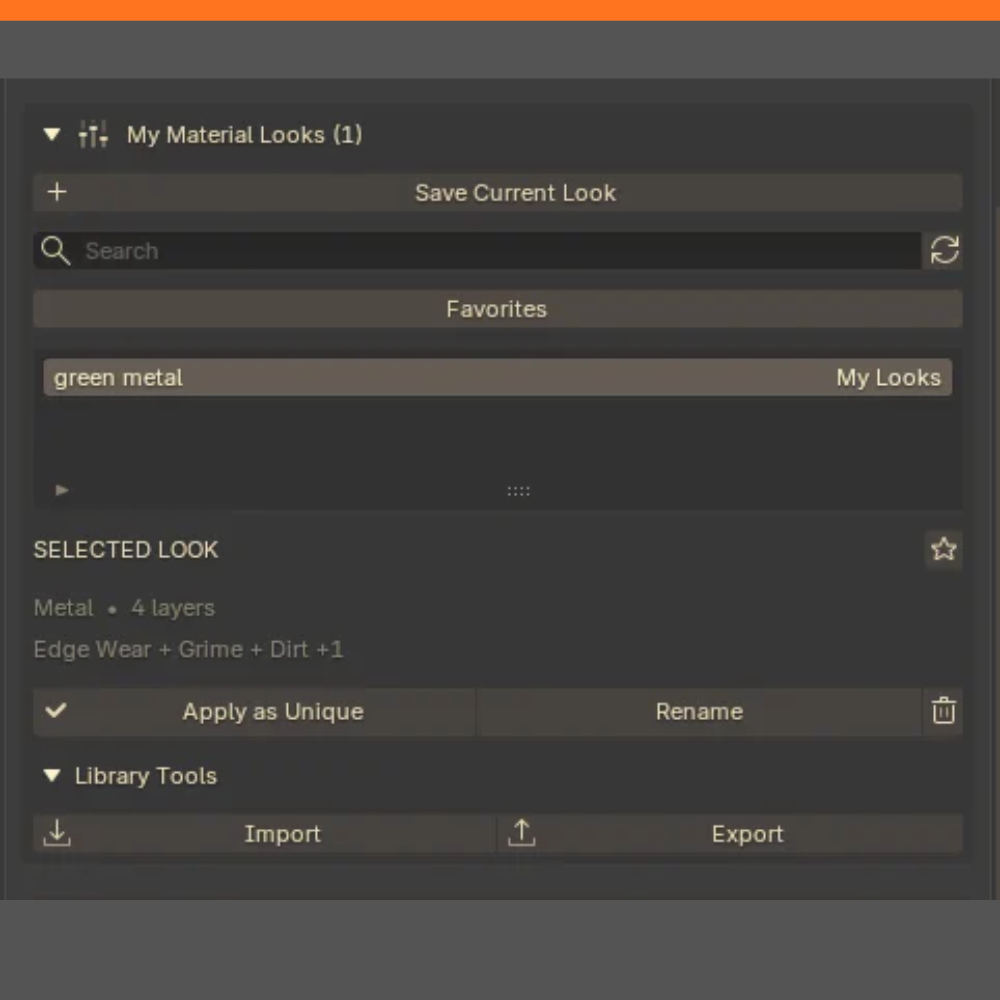
Name them for the result, not the recipe: "Worn Red Painted Metal", "Subtle Dirty Rubber". You will scan this list at speed six months from now.
SECTION 13
Where a material stops looking new. Layers stack, reorder and composite over one another — you are building a history, not applying a texture.
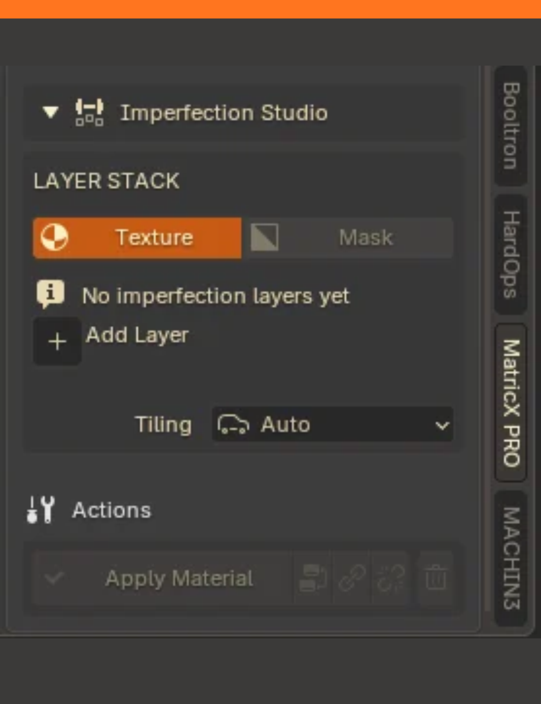
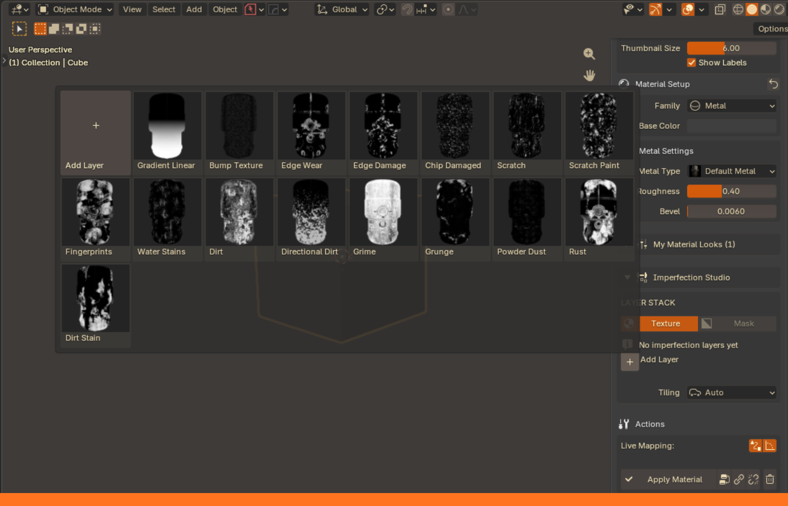
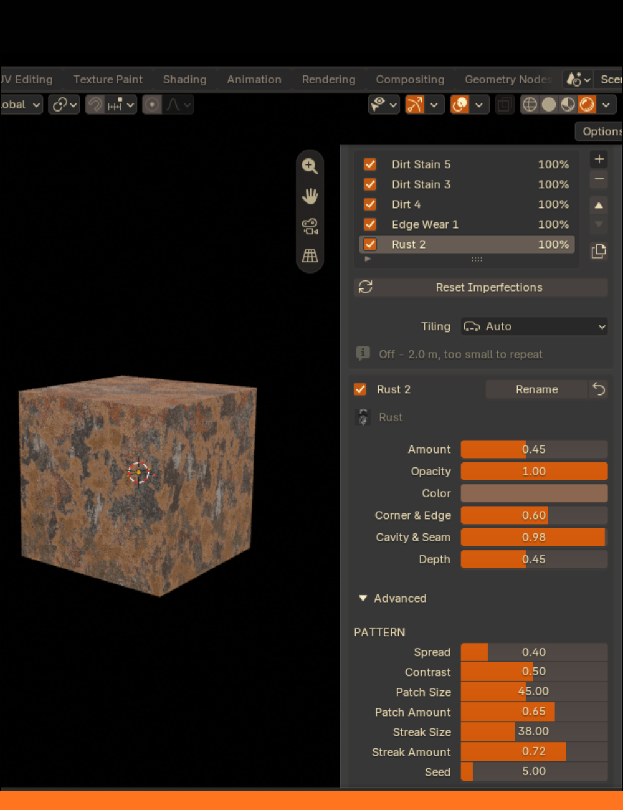
Every type uses the same layout, so you always know where to look:
Switch to Mask to see the active layer alone, in greyscale — white is where the imperfection appears. It is the fastest way to understand what a slider does.
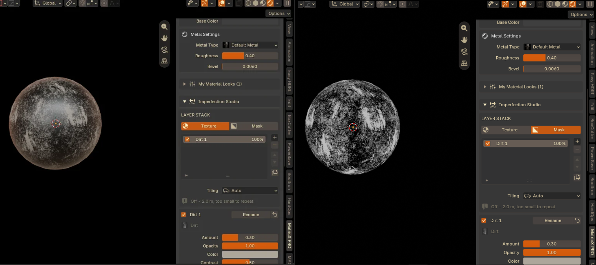
Large surfaces reveal the repeat in any texture. Tiling blends phase-shifted samples to break it up.
| Mode | Behaviour |
|---|---|
| Auto | Default. Reads the largest object using the material: off below 12 m, 2 samples from 12 m, 3 samples from 30 m. |
| Off | One sample. Fastest; right for small objects. |
| Fast | Two blended samples. Hides repeats at moderate cost. |
| High | Three blended samples. For very large surfaces; slowest. |
In Auto, the info line under Tiling shows what was decided for the current object.
SECTION 14
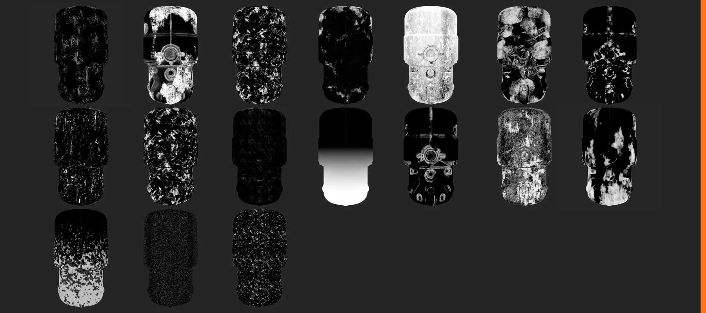
| Type | What it does |
|---|---|
| Gradient Linear | A directional colour gradient across the surface. A tonal foundation, always evaluated beneath the physical layers. |
| Bump Texture | Fine surface grain and raised flakes. Finish only — it keeps the base colour. |
| Type | What it does |
|---|---|
| Edge Wear | Wears the finish off exposed corners and edges. Renders in Cycles only (Section 23). |
| Edge Damage | Chips and breaks up edges where they take impacts. |
| Chip Damaged | Deep chips cut into the surface, with real crater depth. |
| Type | What it does |
|---|---|
| Scratch | Grooves with depth and self-shadowing. Depth controls how dark the groove floor goes. |
| Scratch Paint CHANGED | Fine scrapes through paint to the material beneath, with surface relief. Amount sets coverage. |
| Fingerprints | Sparse oily fingerprint marks. Best at low opacity on gloss and glass. |
| Water Stains | Dried water marks and mineral staining. |
| Type | What it does |
|---|---|
| Dirt | Loose particulate settling into recesses and cavities. |
| Directional Dirt | Dirt washed along one axis, as run-off or airflow leaves it. |
| Grime | Thin handled residue on open surfaces — handles, rails, touched panels. |
| Grunge | General-purpose grunge overlay with real carved depth. |
| Powder Dust NEW | Fine pale, dry particles settled on the surface. |
| Rust | Corrosion eating into corners, seams and cavities. Keep it restrained. |
| Dirt Stain CHANGED | Dirt and liquid staining with flow, pools and wet or dried residue. Formerly Leaking. |
Add Layer only offers what makes sense on the selected material.
| Material | Available imperfections |
|---|---|
| Metal | All 16. |
| Military Camo | All 16 — painted military hardware rusts like bare metal. |
| Plastic | All except Rust (15). |
| Rubber & Leather | All except Rust (15). Overlays stay non-metallic. |
| Wood | Gradient Linear, Edge Wear, Edge Damage, Chip Damaged, Scratch, Dirt, Directional Dirt, Grime, Grunge, Dirt Stain, Water Stains (11). |
| Tinted Glass | Scratch, Fingerprints, Water Stains, Powder Dust, Dirt, Directional Dirt, Grime, Grunge, Dirt Stain, Bump Texture (10). |
| Weapon & Guns | Same as the recipe's base: metal, plastic, Tinted Glass or wood. |
| Other glass | None — plain Glass has its own Smudge and Crack controls. |
| Fabric · Emission · Custom | None. |
SECTION 15
Procedural masks decide where an imperfection goes by rule. A paint mask lets you decide by hand — brush rust onto the one corner that should have it, wipe grime off where a hand would polish.
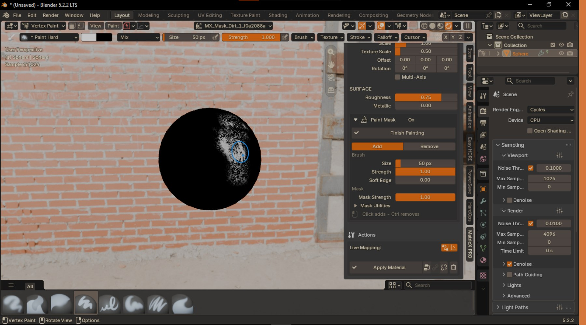
| Mode | Starts | Click | Ctrl + click |
|---|---|---|---|
| Add | Hidden — paint it in | Adds the imperfection | Removes it |
| Remove | Visible — paint it out | Removes the imperfection | Restores it |
Switching modes never changes what is already painted. Pick whichever means less painting.
Paint masks are vertex-based. Detail follows mesh density — a default cube has eight vertices and cannot hold a mask. MatricX warns you when a mesh is too coarse. Subdivide where you need detail.
Shared materials: the mask lives on each mesh. Objects without one have the layer hidden. MatricX warns you and offers Add Mask To All. Only one layer can be painted at a time; if another session is open, click Finish That Session.
SECTION 16
Turn an external texture set into a reusable MatricX entry.
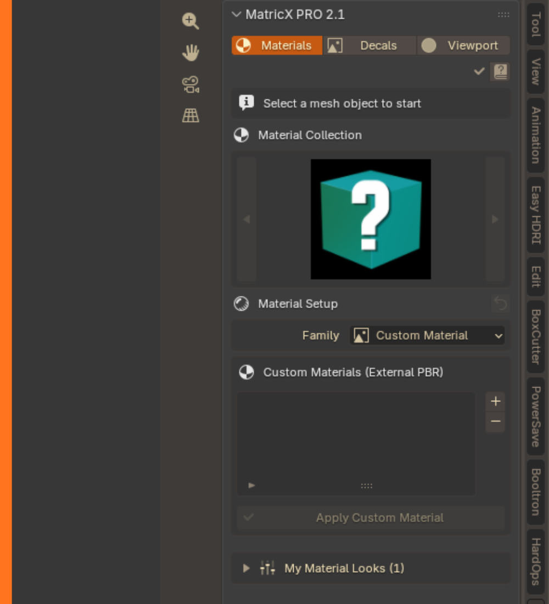
Base Color, Normal, Roughness, Metallic, Ambient Occlusion, packed ORM, Height, Emission, Opacity.
Mapping (scale, rotation, offset, UV map), PBR Textures, and Advanced options such as treat-as-metal, ORM mode, normal strength, displacement and alpha.
Entries are stored in add-on preferences and stay available across projects. Imperfection layers are not offered on custom materials — your maps are the complete surface definition.
SECTION 17
Place, project and manage decal objects. The official library has 17 decals CHANGED; add as many of your own as you like (Section 18).
| Input | Action |
|---|---|
| LMB / Space | Confirm |
| RMB / Esc | Cancel |
| Wheel | Rotate 15° |
| Ctrl + Wheel | Rotate 5° |
| Shift + Wheel | Scale |
| R | Straighten |
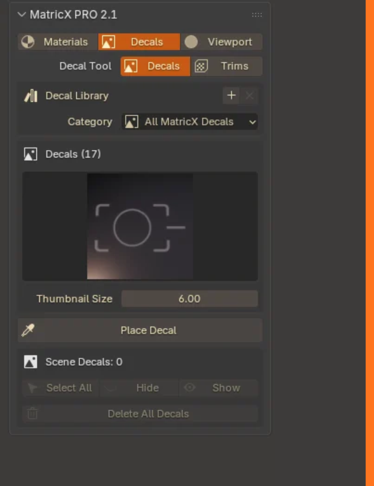
Decal Color and Change Color remain available for supported decals from your own libraries. None of the 17 bundled decals offers them.
For speed in the viewport, use the Decal pie, Ctrl+Shift+D (Section 21).
SECTION 18
MatricX validates the folder and tells you if there is nothing usable inside.
Click ✕ on the library header, or beside any entry in Preferences. Only the reference is removed — nothing is deleted from disk. The bundled library cannot be removed.
Duplicates are filtered. The same decal in two libraries shows once. Identity comes from the
uuid file, so give copies unique uuids if you want them treated as distinct.
SECTION 19
MatricX does not ship trim sheets. The Trims tool is fully functional; add a folder of your own sheets with Add Trim Sheet Library.
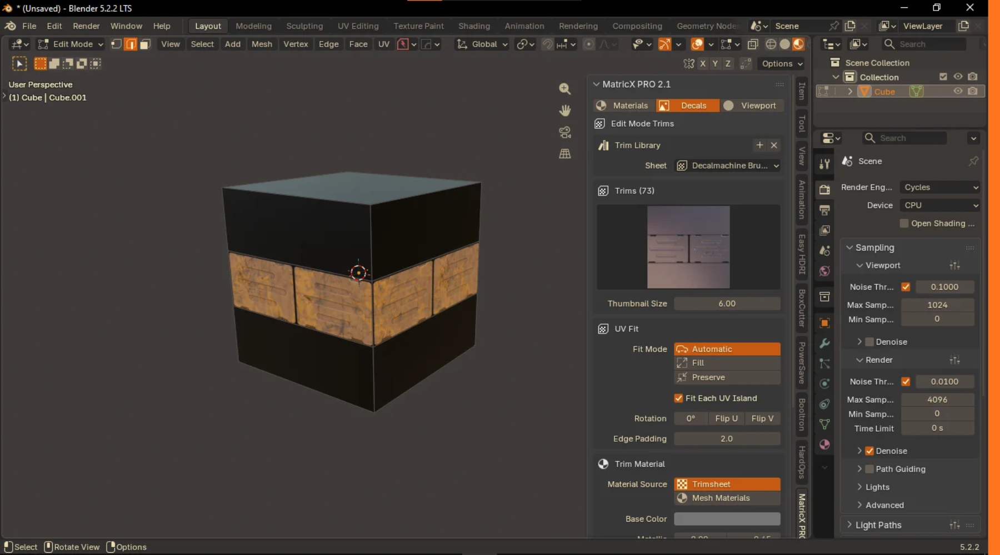
| Option | Behaviour |
|---|---|
| Automatic | Picks the sensible fit for the selection. Start here. |
| Fill | Stretches the selection to fill the region. Fast for panel strips. |
| Preserve | Keeps more of the existing UV proportions. |
| Fit Each UV Island | Fits islands separately — good for repeated strips. |
| Rotation / Flip U / Flip V | Correct orientation without re-selecting. |
| Edge Padding | Insets UVs slightly to stop neighbouring regions bleeding in. |
| Trimsheet / Mesh Materials | Assign the sheet's material, or keep each face's existing material and apply only UV placement. Restore Material undoes it. |
A sheet folder is identified by a data.json with a resolution pair and a
trims list; each trim has coords and dimensions in 0–1 UV space.
SECTION 20
Fast, disposable colour for blockout and modelling — parts stay readable long before look development starts.
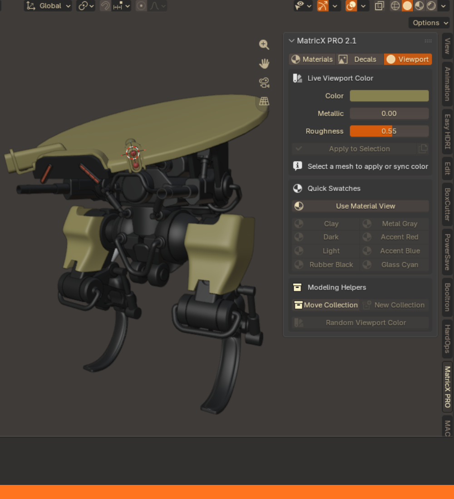
Production materials are protected. Viewport colours never replace a MatricX production material; MatricX tells you how many objects it skipped and why.
SECTION 21 · NEW IN 2.1
Three radial menus put the common actions under your cursor. Each can be switched on or off in Preferences.
Ctrl+Shift+M · Object Mode
Add Material, Black, Grey, Red, Random Colors, Custom Color, Link Materials, Separate Materials.
Ctrl+Shift+D · over a selected decal
Reposition, Scale & Rotate, Surface & Opacity, Project to Surface, Adjust Offset, Delete Decal, plus Material Base / Subset Base where available.
Ctrl+Shift+T · Edit Mode
Move, Scale, Rotate, Refit Selected Trim.

A shortcut conflicts with another add-on? Turn the pie off in Preferences, or rebind it under Preferences → Keymap.
SECTION 22
Edit → Preferences → Add-ons (or Get Extensions) → MatricX PRO.
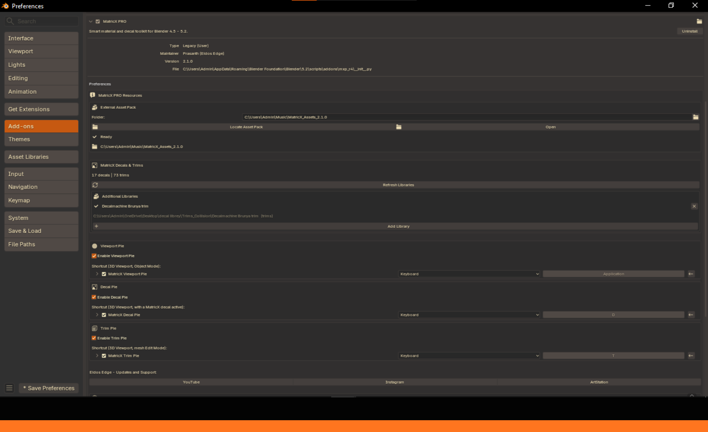
One build runs on Windows, macOS (Intel and Apple Silicon) and Linux. Paths use no platform-specific separators and tolerate differences in capitalisation, so projects move between systems.
SECTION 23
Edge Wear finds edges with Bevel nodes, which only Cycles evaluates. It does not show in EEVEE or in the Material Preview viewport; the layer card says so when that applies. Edge Damage, Chip Damaged and the other types work in both engines.
Tinted Glass and Scope Glass are transmissive with a clear coat in Cycles; lowering Clarity below 1 adds a milky haze. In EEVEE they stay see-through without turning on scene raytracing.
SECTION 24
SECTION 25
Click Locate Asset Pack and select the MatricX_Assets_2.1.0 folder (Section 05).
Until a pack is connected, the panel's "Looked in" line shows a default location inside the add-on folder —
that is a placeholder, not a sign your selection was ignored.
You selected an older pack. MatricX PRO 2.1.0 needs MatricX_Assets_2.1.0.zip: download it,
extract it, and select the new folder. The old pack is not changed.
In 2.1 the thumbnails live in the asset pack. Connect the pack.
Extract the pack in your home directory (not inside .var) and use Locate Asset Pack.
The pack is probably in a folder with a very long path. Move it somewhere short, such as D:\Assets\,
and locate it again.
It renders in Cycles only — not in EEVEE or Material Preview (Section 23).
Lower Opacity first, then Amount. Switch to Mask view to see exactly what the mask does.
The list follows what the material supports (Section 14). Plain glass, Fabric, Emission and Custom offer none.
2.1 uses a new pattern (Section 03). Adjust Amount and Scale.
Their images live in your 2.0 pack folder. Keep it in its original location.
Click Finish That Session, then start again on the layer you want.
Masks are vertex-based. Subdivide where you need finer control.
Fabrics need a UV map. Click Create UV Map when MatricX warns you.
Refresh libraries and check the same folder is not added twice. Decals are de-duplicated by uuid.
Turn the pie off in Preferences, or rebind it under Preferences → Keymap.
SECTION 26
Use the official Eidos Edge links in MatricX Preferences for support, updates and tutorials, or visit the Support page to report a bug or send feedback.
When reporting a problem, include:
.blend where possible.Thank you for using MatricX PRO.
— Prasanth · Eidos Edge · MatricX PRO Developer